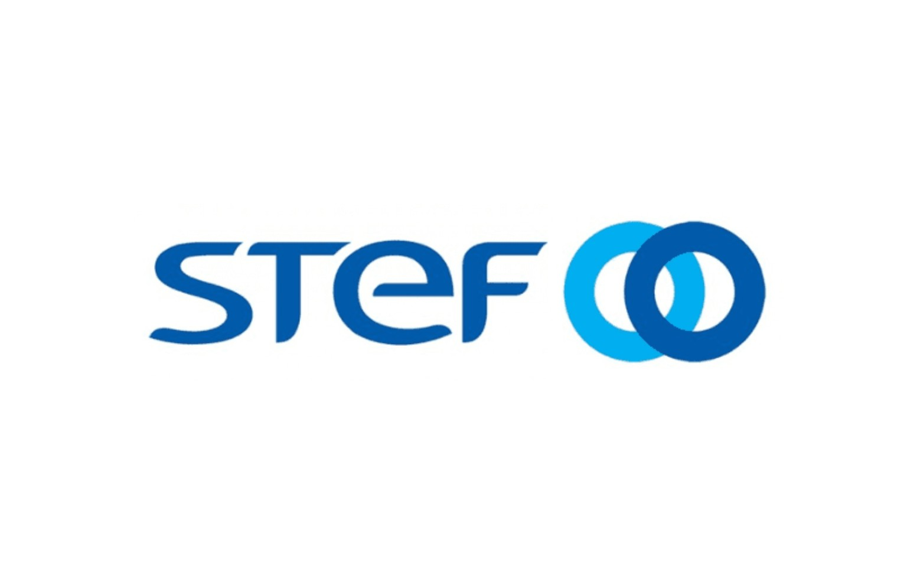

Consulta y edita ubicaciones, colores y productos desde tu móvil.
Selecciona primero el área, pasillo y número de arriba. Puedes dejar campos pendientes y modificarlos después.
Los datos se guardan en este navegador, no en GitHub. Exporta una copia JSON para conservarlos o trasladarlos a otro móvil. Importar reemplaza los datos actuales.